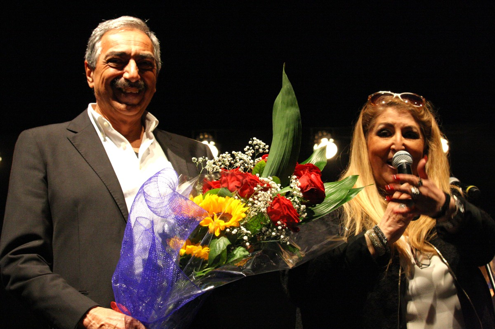
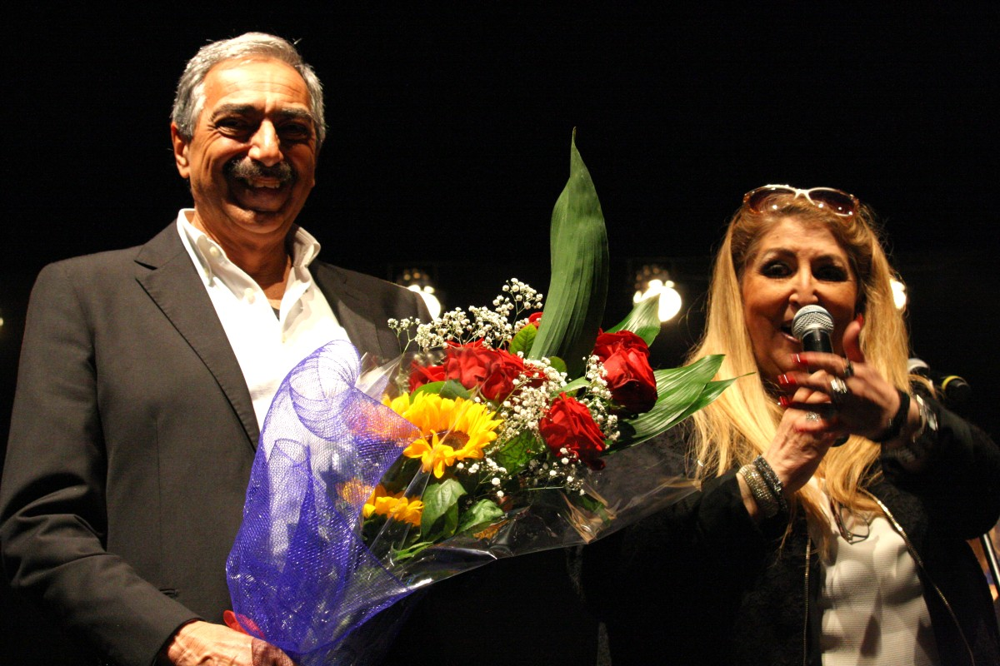

L'edizione è a supporto dell'organizzazione umanitaria 'Scarp de Tenis', presentata da Roberto Guanaglione.
Il primo ospite illustre: il Maestro Enrico Intra, che delizierà il pubblico duettando con i maestri Farina e Tomelleri.


Il Maestro Nando de Duca e Ramona Wess.
Il magnifico trio Farina, Tomelleri, Brioschi
Ospite fra il pubblico:
Tony Dallara
Marino Bartoletti e Silvia Reggiani
 
